Карточка Zeekr 8X на телефоне: правки и три варианта ритма
Вывод: все твои правки на карточке. Видео горизонтальное и занимает четверть экрана. Сравнение с 9X и L9 на телефоне убрано. В расчёте нет повтора машины, а в форме выбор «расчёт, лизинг, кредит». В тест-драйве только 8X, конфигуратор видно по снимку. Карточка стала 15,5 экрана вместо 17,8. Против «сплошного текста» я сделал три варианта ритма прямо на карточке: зебра, главы и цифры-удары. Открой каждый на телефоне и выбери. Рекомендую «Главы»: страница делится на 4 части, и между ними есть пауза.
15.11.2026 · карточка как сейчас
1. Что исправил по твоим скринам
Видео в обзоре. Было 356×688 px – выше экрана и уходило вниз. Ролик горизонтальный, но в разметке стояла высота 688, и браузер растягивал его по ней. Стало 16:9, 356×200 px – четверть экрана.
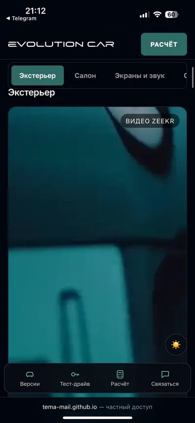
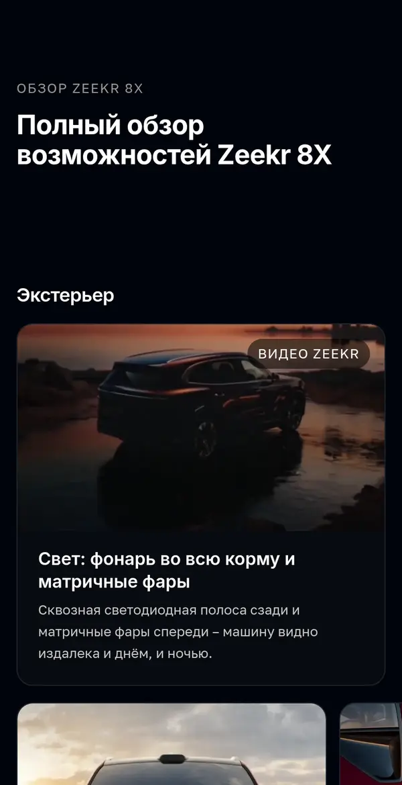
«Чем 8X отличается от 9X и L9» на телефоне больше не показывается, на десктопе таблица осталась.
«Рассчитаем точную стоимость». Картинки машины больше нет: она уже была в первом экране и в конфигураторе. Вместо неё одна строка: какая версия и цвет выбраны. Вместо «Расчёт под ключ / Тест-драйв / Лизинг» теперь «Расчёт под ключ / Лизинг / Кредит». Кнопка тест-драйва ведёт в ту же форму, но выбор цели там скрыт – остаётся «Уточнить наличие и тест-драйв».
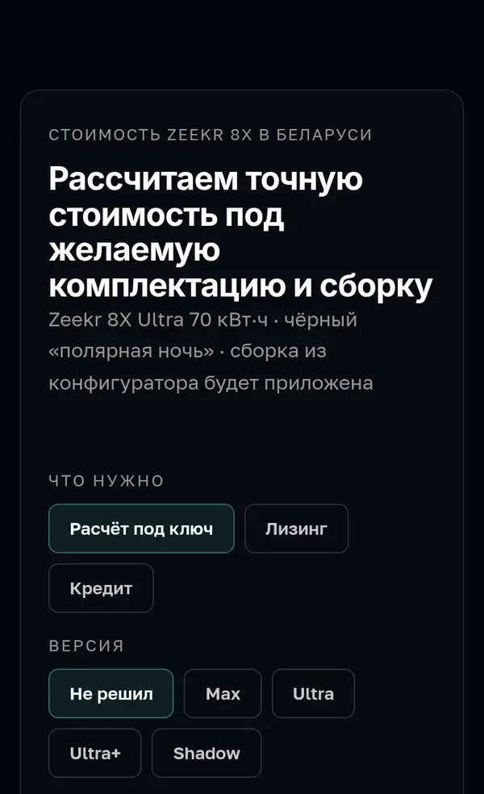
Тест-драйв – только Zeekr 8X, вкладок 9X и «Оба подряд» нет. Конфигуратор – на карточке снимок самого конфигуратора с версиями и цветами и метка «нажмите, чтобы открыть». По нажатию он открывается на весь экран, проверил.
2. Три варианта против сплошного текста
Сейчас все блоки на одном тёмном фоне, с одинаковым надзаголовком, заголовком и абзацем. Глазу не за что зацепиться, и страница читается как один длинный текст.
| Вариант | Что меняется | Длина | Открыть на телефоне |
|---|---|---|---|
| A. Зебра | Блоки чередуют фон: тёмный и чуть светлее. Цена под ключ и свой сервис – на светлом фоне, как отдельные листы | 16,3 экрана | ?ritm=a |
| B. Главы | Страница делится на 4 главы: Машина, Цена и оплата, Заказ и гарантии, После покупки. Перед каждой – кадр на всю ширину с номером и названием | 17,9 экрана | ?ritm=b |
| C. Цифры-удары | Между текстовыми блоками – полосы на зелёном фоне с одной крупной цифрой: 660 кВт, до 1416 км, от 356 800 ¥, Машерова 15/4 | 17,2 экрана | ?ritm=c |
Можно сочетать: например, B + светлая цена из A.
Вся страница сверху вниз: как сейчас, A, B, C
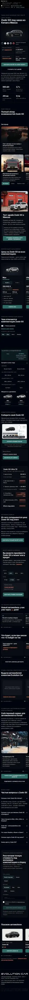
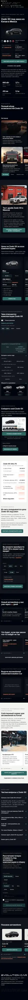
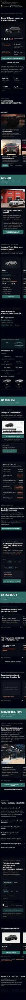
Переход «конфигуратор → цена»
Как сейчас
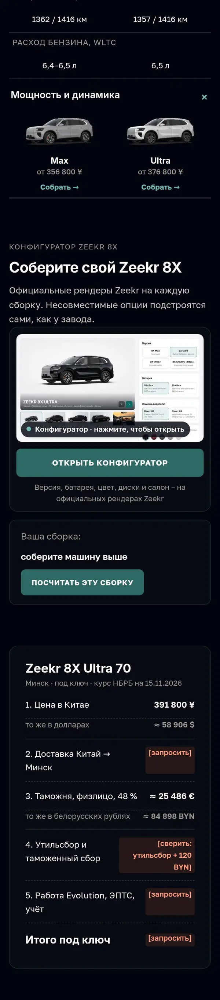
A. Зебра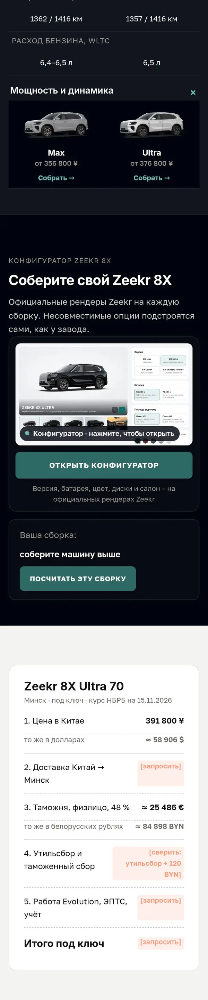
B. Главы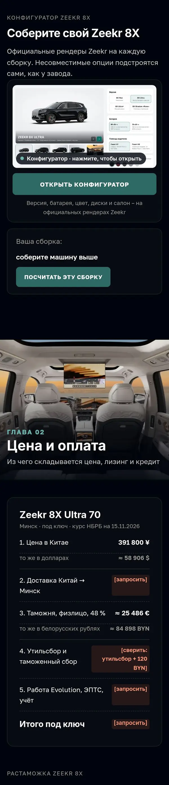
C. Цифры-удары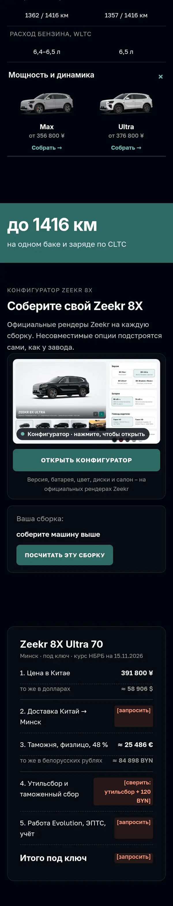
Переход «выдачи → свой сервис»
Как сейчас
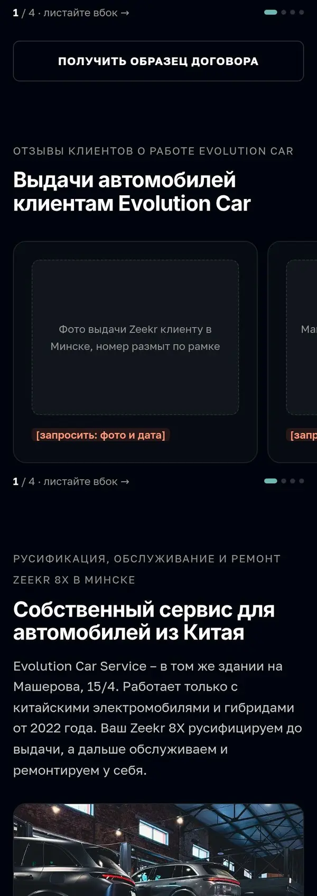
A. Зебра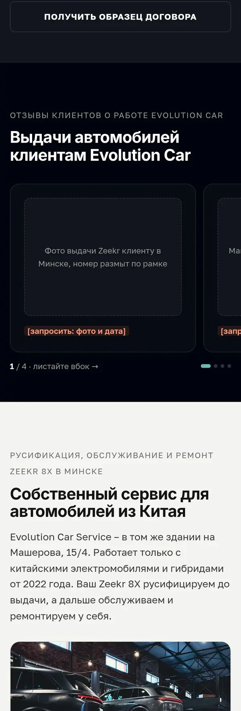
B. Главы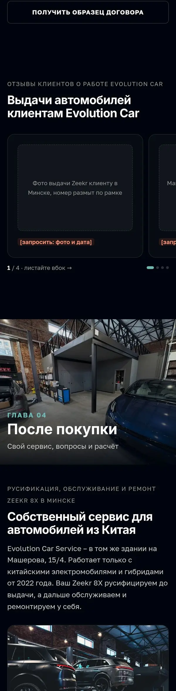
C. Цифры-удары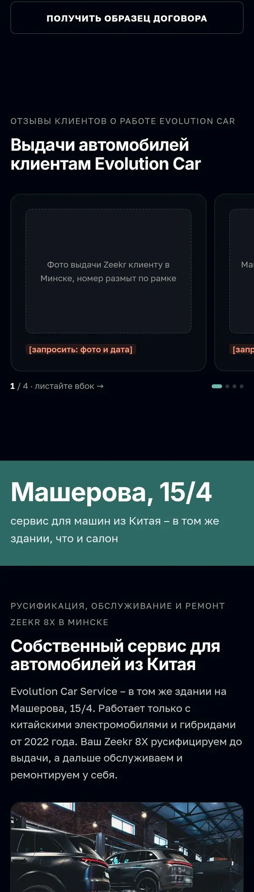
Почему рекомендую B. Глава отвечает на вопрос «где я и что дальше», а кадр даёт глазу отдохнуть между блоками текста. Кадры глав взяты только из тех фото, которых больше нет на странице. Минус варианта: +2,4 экрана длины. A короче всех, но разницу фона на тёмной теме видно слабо. C ярче всех, но четыре зелёные полосы спорят с зелёными кнопками.
3. Что вошло в правила
- Видео на телефоне – только горизонтальное 16:9 и не выше трети экрана. Проверка прототипа валит видео выше 40 % экрана или вертикальное.
- Сравнение с другими моделями на телефоне не ставим (режим «скрыть»), только на десктопе. Проверка валит такой блок, если он виден на 390 px.
- Одна картинка товара – один раз на странице.
- Цели формы – по смыслу блока: у денег – расчёт, лизинг, кредит. Тест-драйва в этом выборе нет.
- В карточке модели – только эта модель: без вкладок других моделей.
- Карточка конфигуратора – снимок самого инструмента с меткой «нажмите, чтобы открыть».
Записано в правила мобильной вёрстки, в журнал твоих решений и в правила карточек проекта EV Car. Проверку прогнал на двух версиях: старая карточка упала на двух новых правилах, новая проходит.
Нужно от тебя
- Вариант ритма: A, B, C или сочетание.
- Слово по остальным блокам со страницы разбора мобилки, если ещё не смотрел.
Что раскрыть
- Как будут выглядеть главы на десктопе.
- Короче тексты под заголовками: на телефоне одна строка вместо абзаца.